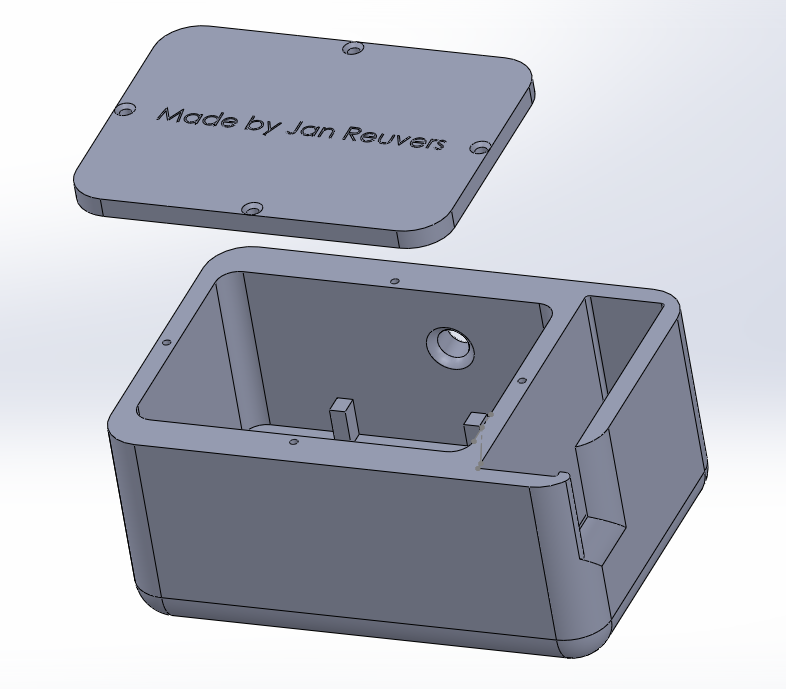
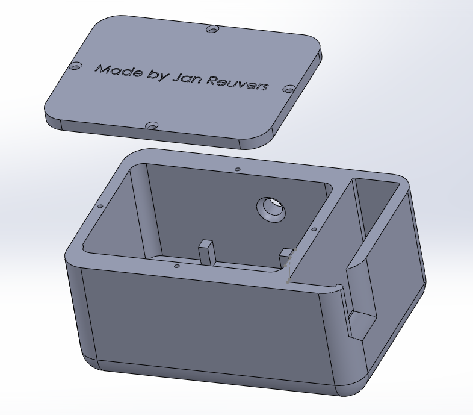

ontwerpen: past nieuwe technologieën op het gebied van van IoT, Robotica en 3D-printen toe op een praktijkcasus
Voor technology is heb onderhoud van een potplant geautomatiseerd. Hiervoor is gebruik gemaakt van een ESP32 voor het besturen van het licht, bewatering en het lezen van de luchtvochtigheid, grondvochtigheid en lucht temperatuur. De printplaat is geen nieuwe technology, omdat dit een vaak gebruikt microprocessor is. Voor deze microprocessor is een behuizing ontworpen wat met behulp van een 3D printer gerealiseerd is. Bij “week 8-12 3D printen, Behuizing ontwerp” staat het ontwerp wat het eerste ontwerp is. vanaf daar is elke week gewerkt aan het optimaliseren tot het uiteindelijke ontwerp.
ontwerpen: plaatst de casus in een business context
Het testen van een schakeling op een breadboard wordt in de praktijk vaker gedaan, omdat hiermee gemakkelijk uitbereidingen of aanpassingen op gemaakt kunnen worden.
Het maken van een passende printplaat is zodat het overzichtelijk wordt en alles op een kleiner oppervlak past.
Om alle onderdelen op de juiste manier te solderen is een vereiste in de elektrotechniek, omdat dit geregeld voor kan komen.
Er zijn veel bedrijven die behoefte hebben aan werknemers die zelf een printplaat en schakeling kunnen ontwerpen.
Hiervoor bestaan ook een HBO opleiding, omdat hier meer achter zit als wat tijdens de workshops gemaakt is.
Mijn opleiding industriële automatisering valt onder de elektrotechniek, waardoor een gedeelte het maken van printplaten is.
Nadat ik dit op LinkedIn heb geplaatst krijg ik elke week een bericht of ik bij een bedrijf zou willen werken.
Dit bevestigd het feit dat er veel bedrijven zijn die behoefte hebben aan een elektrotechnische werknemer.


 
